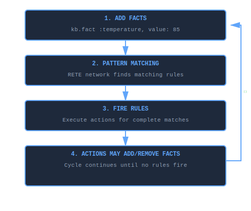
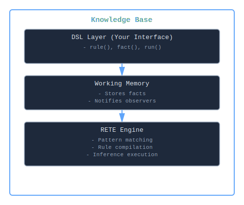

What is a Knowledge Base?¶
A knowledge base in KBS is a container that holds facts (what you know) and rules (how to reason about what you know), providing automated inference and decision-making capabilities.
Core Concept¶
Think of a knowledge base as a reasoning system that:
- Stores facts - Pieces of information about your domain (e.g., "temperature is 85°F", "stock price is $150")
- Defines rules - Patterns that trigger actions when facts match (e.g., "IF temperature > 80°F THEN alert")
- Performs inference - Automatically detects when rules should fire and executes their actions
- Maintains consistency - Keeps track of what's true and propagates changes efficiently
Anatomy of a Knowledge Base¶
A knowledge base consists of three main components:
1. Facts (Data)¶
Facts represent knowledge about your domain. Each fact has:
- Type - Category of information (e.g., :temperature, :stock, :sensor)
- Attributes - Key-value pairs describing the fact (e.g., value: 85, location: "server_room")
kb.fact :temperature, value: 85, location: "server_room"
kb.fact :stock, symbol: "AAPL", price: 150.25, volume: 1_200_000
kb.fact :sensor, id: 42, status: "active"
2. Rules (Logic)¶
Rules define IF-THEN patterns that trigger actions when facts match conditions:
rule "high_temperature_alert" do
# IF these conditions match...
on :temperature, value: greater_than(80), location: :loc?
# THEN execute this action
perform do |facts, bindings|
puts "⚠️ High temperature at #{bindings[:loc?]}"
send_alert(bindings[:loc?])
end
end
3. Working Memory (State)¶
Working memory holds the current set of active facts. As facts are added/removed, the RETE engine automatically:
- Matches facts against rule conditions
- Tracks partial matches
- Fires rules when all conditions are satisfied
How Knowledge Bases Work¶
The Inference Cycle¶

The inference cycle continuously processes facts through pattern matching and rule firing until no more rules can fire.
Example Flow¶
kb = KBS.knowledge_base do
# Define rule
rule "stock_alert" do
on :stock, symbol: :sym?, price: greater_than(100)
perform do |facts, bindings|
puts "#{bindings[:sym?]} is expensive!"
end
end
# Add fact (triggers pattern matching)
fact :stock, symbol: "AAPL", price: 150
# Execute inference
run # → Outputs: "AAPL is expensive!"
end
Knowledge Base Types¶
KBS provides two implementations:
1. In-Memory Knowledge Base¶
Class: KBS::DSL::KnowledgeBase
Created via: KBS.knowledge_base do ... end
Characteristics:
- ✅ Fast - All data in RAM
- ✅ Simple - No configuration needed
- ✅ Perfect for: Short-lived processes, prototyping, testing
- ⚠️ Volatile - Data lost when process ends
Example:
kb = KBS.knowledge_base do
rule "momentum_buy" do
on :stock, price_change: greater_than(5)
perform { puts "Strong momentum detected!" }
end
fact :stock, symbol: "NVDA", price_change: 7.2
run
end
2. Blackboard Knowledge Base¶
Class: KBS::Blackboard::Engine
Created via: KBS::Blackboard::Engine.new
Characteristics:
- ✅ Persistent - Facts survive restarts
- ✅ Auditable - Complete history of changes
- ✅ Multi-agent - Supports concurrent reasoning
- ✅ Flexible storage - SQLite, Redis, or Hybrid
- ⚠️ Slower - I/O overhead
Example:
engine = KBS::Blackboard::Engine.new(db_path: 'kb.db')
engine.add_rule(rule)
engine.add_fact(:stock, symbol: "AAPL", price: 150)
engine.run
# Facts persist even after restart
Key Differences from Databases¶
| Aspect | Knowledge Base | Database |
|---|---|---|
| Purpose | Reasoning & inference | Storage & retrieval |
| Operation | Automatic rule firing | Manual queries |
| Logic | Declarative rules | Procedural code |
| Updates | Propagate through network | Independent transactions |
| Focus | "What should happen when..." | "What data exists..." |
Example Comparison:
# Database approach (manual logic)
stocks = db.query("SELECT * FROM stocks WHERE price_change > 5")
stocks.each do |stock|
if stock.volume > 1_000_000
send_alert(stock.symbol)
end
end
# Knowledge base approach (declarative rules)
kb.rule "momentum_alert" do
on :stock, price_change: greater_than(5), volume: greater_than(1_000_000)
perform { |facts, b| send_alert(b[:symbol?]) }
end
kb.run # Automatically fires for all matching facts
Common Usage Patterns¶
1. Event Processing¶
Monitor streams of events and trigger actions:
kb = KBS.knowledge_base do
rule "sensor_timeout" do
on :sensor, id: :sid?, expected: true
without :reading, sensor_id: :sid? # No recent reading
perform { |facts, b| alert_timeout(b[:sid?]) }
end
# Events flow in
fact :sensor, id: 1, expected: true
fact :reading, sensor_id: 2, value: 42 # Sensor 1 has no reading!
run
end
2. Decision Support¶
Encode business rules and compliance checks:
kb = KBS.knowledge_base do
rule "approve_loan" do
on :applicant, credit_score: greater_than(700), income: :income?
on :loan, amount: :amount?
perform do |facts, b|
if b[:income?] > b[:amount?] * 0.3
approve_loan!
end
end
end
end
3. Complex Event Detection¶
Find patterns across multiple related facts:
kb = KBS.knowledge_base do
rule "golden_cross" do
on :ma_50, value: :fast?
on :ma_200, value: :slow?
perform do |facts, b|
if b[:fast?] > b[:slow?]
puts "Golden cross detected - bullish signal"
end
end
end
end
4. State Machine Management¶
Model workflows and state transitions:
kb = KBS.knowledge_base do
rule "order_to_shipping" do
on :order, id: :oid?, status: "paid"
on :inventory, available: greater_than(0)
perform do |facts, b|
order = query(:order, id: b[:oid?]).first
retract order
fact :order, id: b[:oid?], status: "shipping"
end
end
end
Relationship to Other Components¶
A knowledge base integrates several KBS components:

A knowledge base is composed of three layers: the DSL provides the user interface, working memory stores facts, and the RETE engine performs pattern matching and inference.
When to Use a Knowledge Base¶
✅ Good fit:
- Complex business rules that change frequently
- Multi-condition pattern matching
- Event correlation and monitoring
- Expert systems and decision support
- Workflow and state machine management
- Real-time stream processing
❌ Not ideal for:
- Simple CRUD operations
- Pure data storage without logic
- High-throughput data pipelines (use specialized tools)
- When performance is more critical than maintainability
Advanced Concepts¶
Variable Binding (Join Tests)¶
Variables link facts across multiple conditions:
rule "order_fulfillment" do
on :order, product_id: :pid?, quantity: :qty?
on :inventory, product_id: :pid?, available: :avail?
# :pid? creates a join - both facts must have same product_id
perform do |facts, b|
if b[:avail?] >= b[:qty?]
ship_order(b[:pid?])
end
end
end
Negation (Absence Testing)¶
Rules can fire based on missing facts:
rule "missing_config" do
on :system, initialized: true
without :config, loaded: true # No config fact exists
perform { raise "Configuration missing!" }
end
Priority Control¶
Control rule firing order (Blackboard only):
rule "critical_alert" do
priority 100 # High priority fires first
on :alert, level: "critical"
perform { shutdown_system! }
end
rule "log_alert" do
priority 1 # Low priority fires last
on :alert, level: :level?
perform { |facts, b| log(b[:level?]) }
end
Performance Considerations¶
Knowledge bases excel when:
- Rules are stable (compiled once)
- Facts change frequently (efficient incremental matching)
- Multiple rules share patterns (network node sharing)
Optimization Tips:
- Order conditions by selectivity - Most restrictive first
- Use specific patterns -
value: 85better thanvalue: greater_than(0) - Limit negations - Each negation adds overhead
- Batch fact additions - Add all facts, then call
runonce - Use indices - Blackboard stores support indexed queries
Further Reading¶
- DSL Reference - Complete guide to defining rules
- RETE Algorithm - How pattern matching works
- Blackboard Architecture - Persistent knowledge bases
- Getting Started - Practical examples
- API Documentation - Class and method reference
Summary¶
A knowledge base is:
- A container for facts (data) and rules (logic)
- An inference engine that automatically detects when rules should fire
- A declarative way to express "IF these patterns exist THEN take this action"
- Available in both in-memory (fast, volatile) and blackboard (persistent, auditable) implementations
Think of it as a database that actively reasons about its contents rather than passively storing them.